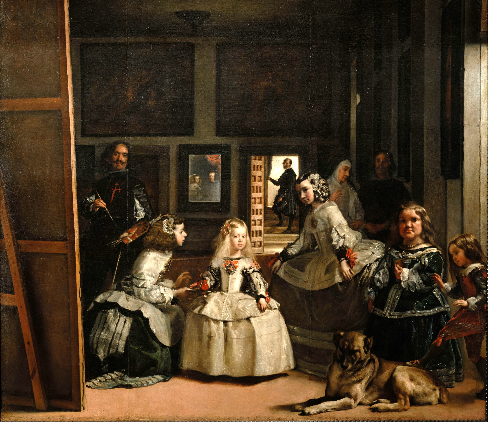

Бароко
1600 - 1730/50
ОСНОВНІ ДІЯЧІ: КАРАВАДЖО • АНІБАЛЕ КАРРАЧЧІ • ПІТЕР ПАУЛЬ РУБЕНС • АРТЕМІЗІЯ ДЖЕНТІЛЕСКІ • ДІЄГО ВЕЛАСКЕС • РЕМБРАНДТ
Реакцією католицької церкви на Реформацію стала Контрреформація, яка стверджувала, що мистецтво має надихати глядача емоційними релігійними сюжетами. Стиль бароко з'явився як результат релігійної напруженості в Європі наприкінці XVI ст. У перекладі з португальської "бароко" означає "перлина неправильної форми". Це стиль, який характеризується розкішшю, йому властиві драматизм, підвищена динаміка, психологізм, емоційність. Завдання бароко - домогтися максимального залучення глядача у світ картини, тому для зображення обирають кульмінаційні моменти, а також використовують інші способи акцентувати напругу: динамічні пози, складні ракурси. На Тридентському соборі було ухвалено рішення, що релігійне мистецтво має пробуджувати побожність, бути реалістичним, привертати увагу глядача, змушувати співпереживати героям картини і показувати велич католицької церкви. При цьому в цю епоху майстрів насамперед цікавить не ідеал, як в епоху Відродження, а життя, яким воно було в реальності, нехай і трохи театралізоване та перебільшене. Стає популярним не тільки парадний, а й побутовий портрет. Другий протиставлений першому: це природна життєва ситуація, найбезпосередніший і найдинамічніший образ людини. Метою парадного портрета було продемонструвати заслуги героя і викликати у глядачів почуття захоплення. Портрети важливих персон створювали Ван Дейк і Веласкес. Найспецифічнішим явищем в історії портрета в XVII столітті став груповий портрет, що набув поширення в Голландії. Картини були замовними, і на них зображували всіх, хто вносив художнику плату. Від майстра вимагали розташувати фігури таким чином, щоб кожна особа виглядала як повноцінний портрет. Крім того, були популярні натюрморти, які, поряд із зовнішньою простотою, мали глибокий алегоричний зміст. У XVII ст. новий стиль бароко увібрав у себе і розвинув досягнення Високого Відродження, здійснив відкриття як у релігійному, так і у світському мистецтві, насамперед у пейзажі. Для бароко характерне збільшення масштабу картин. Стиль зародився в Італії, потім поширився у Франції, Німеччині та Нідерландах, Іспанії та Британії і продовжував активно розвиватися приблизно до 1720 р. Можна сказати, що стиль бароко - це втілення в мистецтві загального занепокоєння, що панувало у світі. З одного боку, науковий і технічний прогрес просував людство вперед, а з іншого - людина починала відчувати себе надто незначною і нікчемною порівняно з величезним і складним світом.
